I started hiking just for fun, drawn in by how pretty the trails were and the cool places they led to. The more I did it, the more I found myself drawn to the harder hikes and the adventure of getting there. I've recently started tackling 14ers and want to keep working through them. One of my favorite hikes so far has been Mount Fuji in Japan.
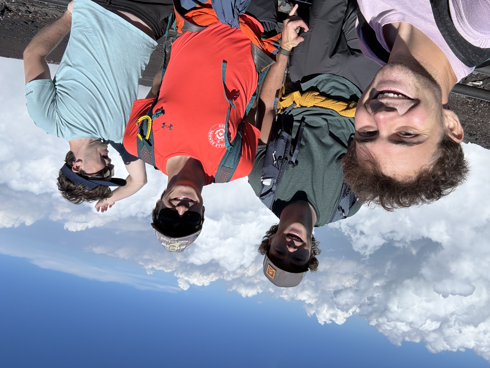
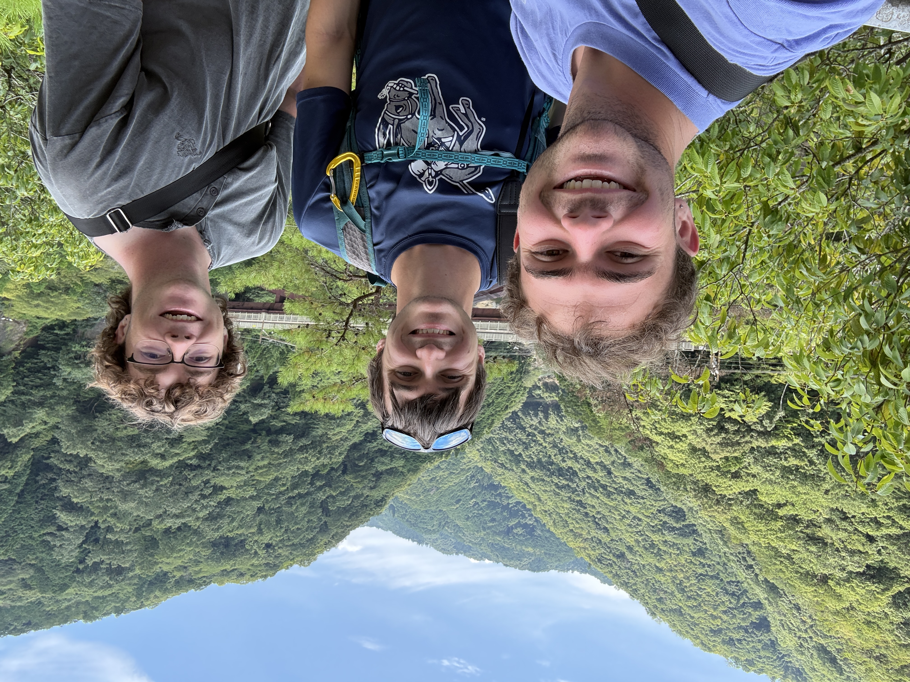
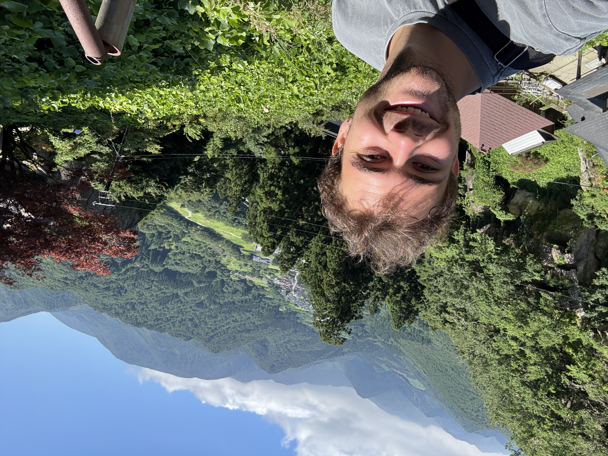
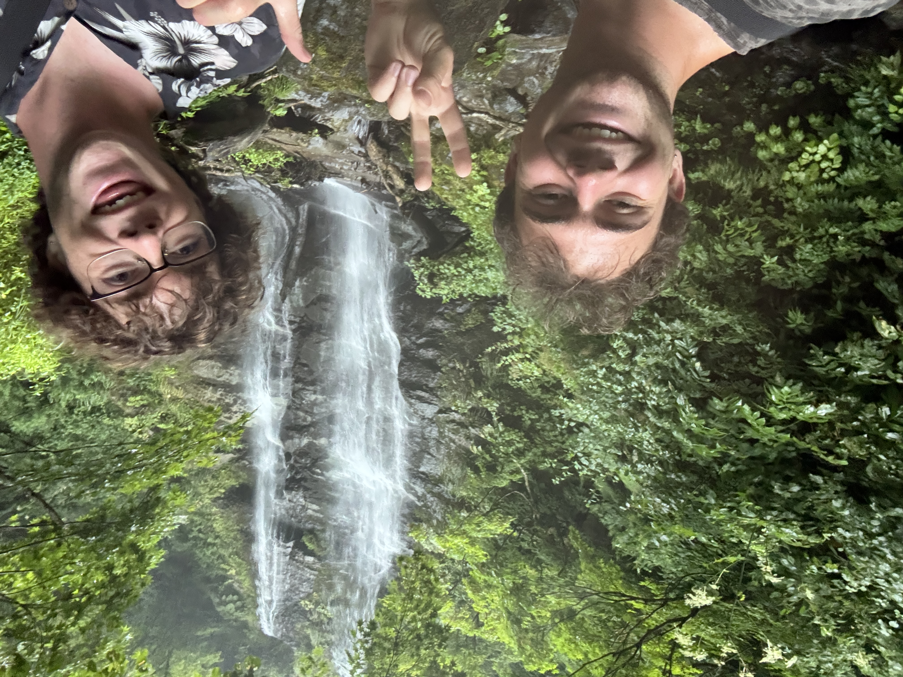
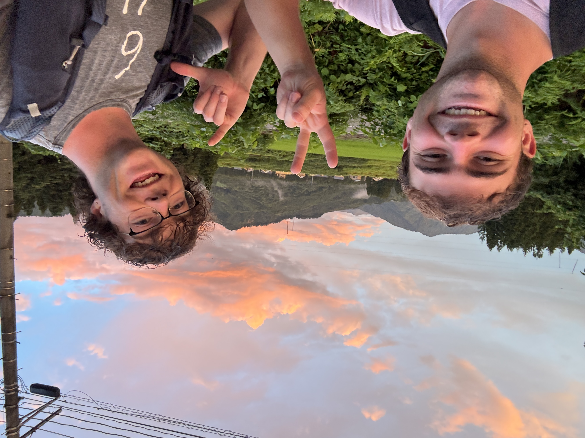
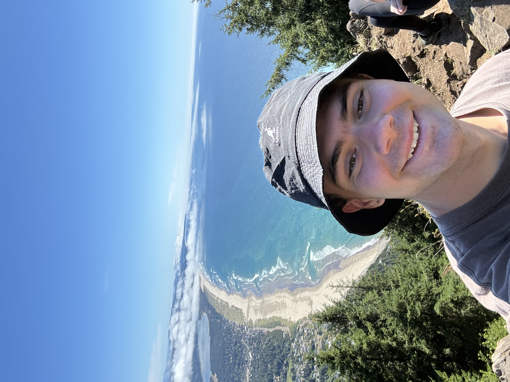
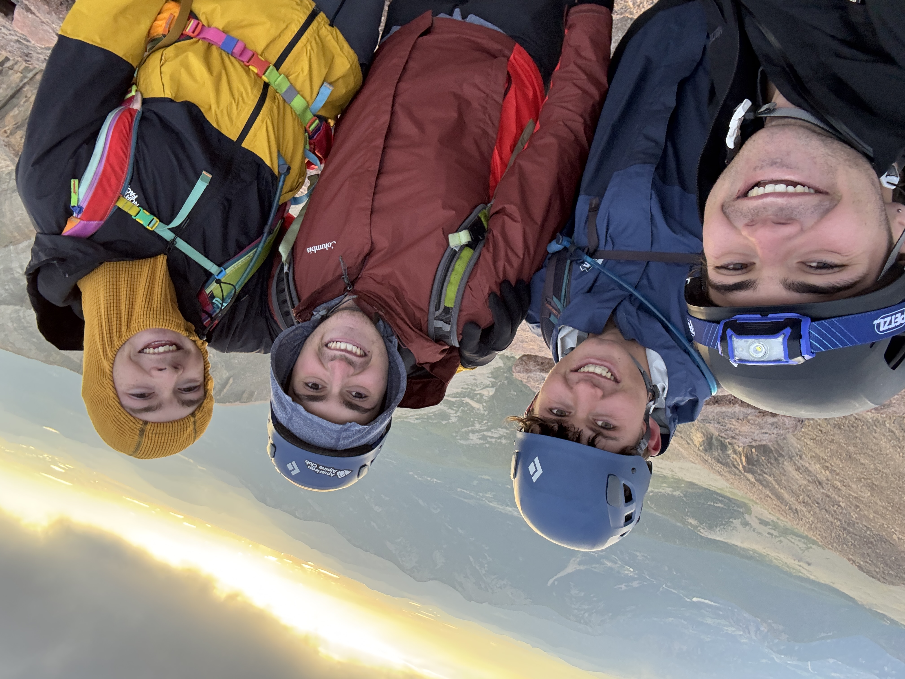
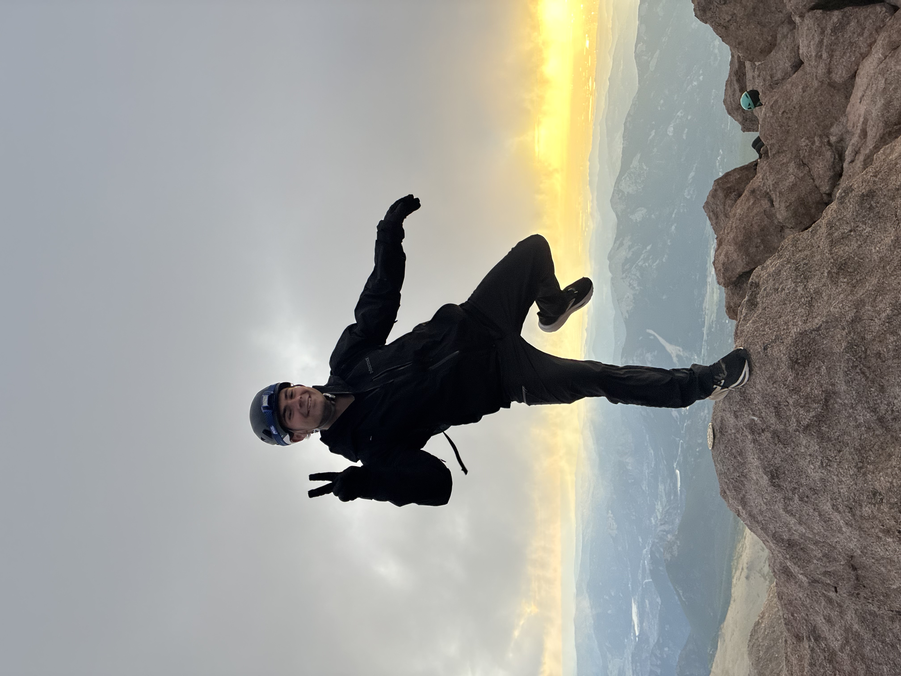
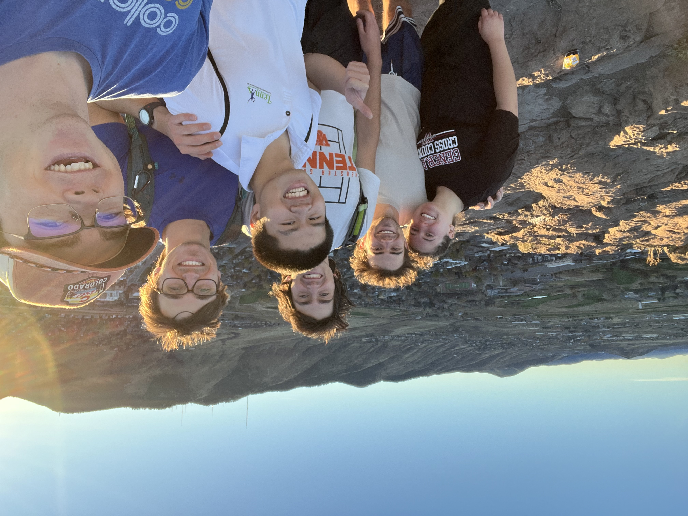
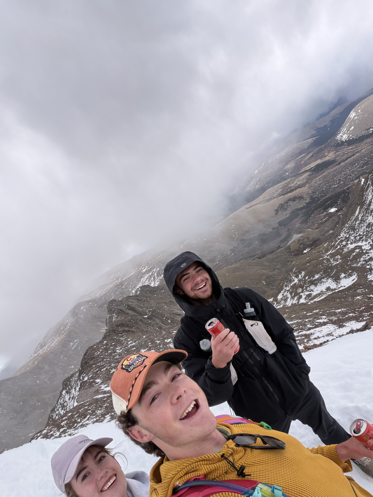
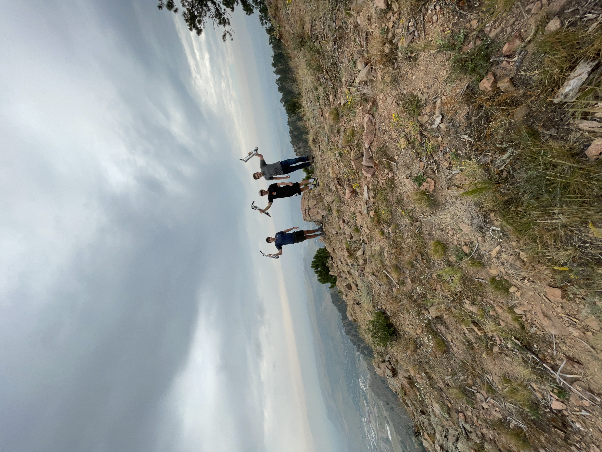
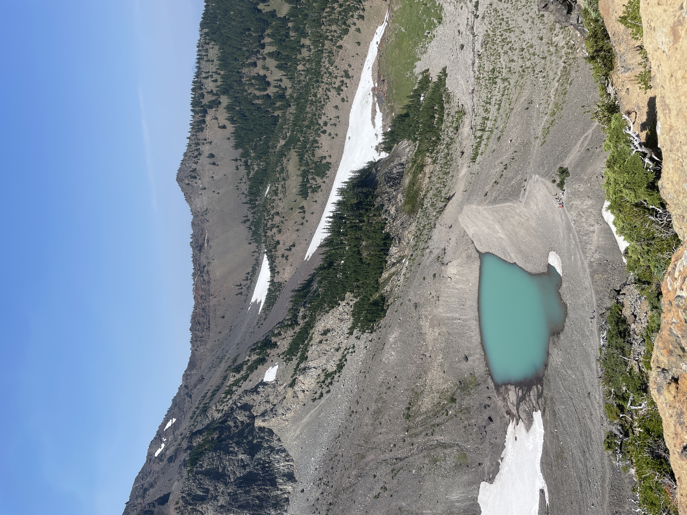
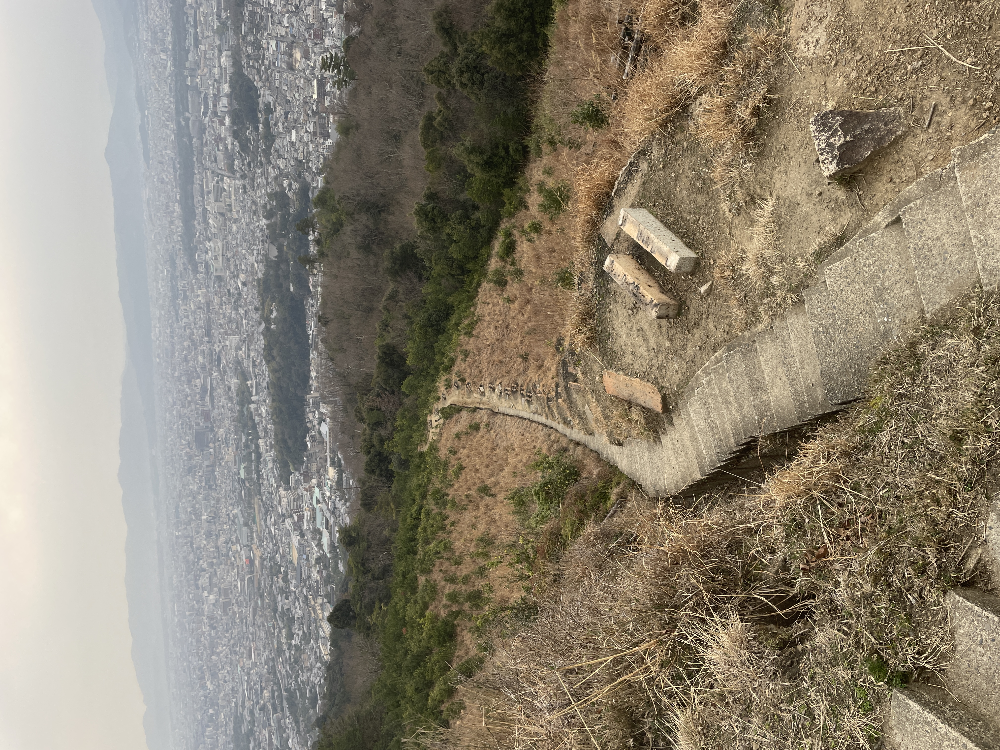
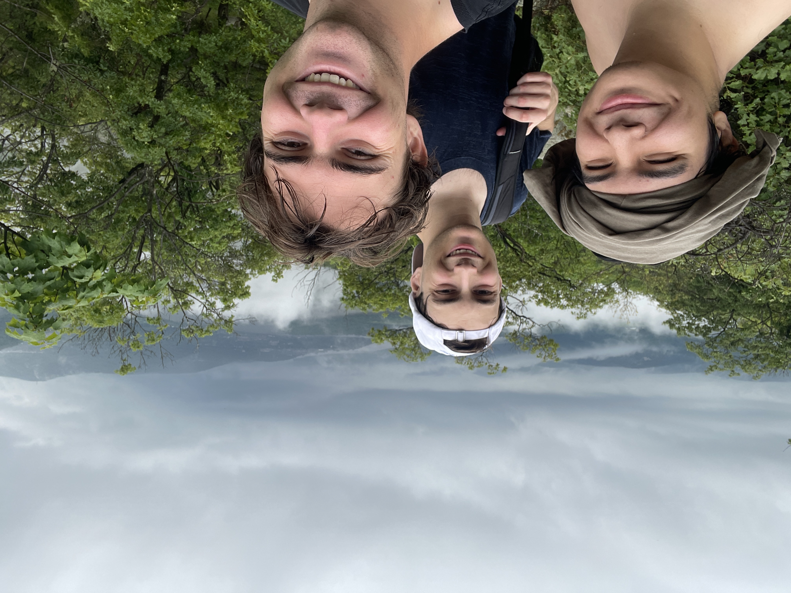
1 / 15